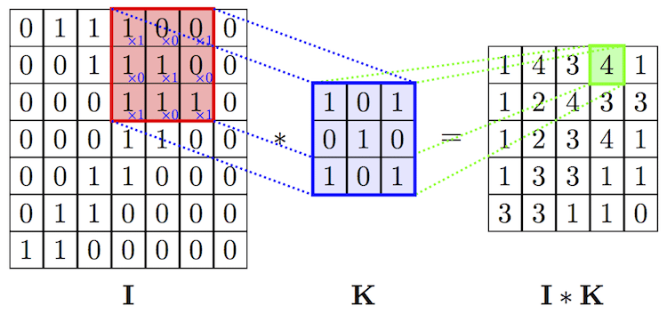

Blurring and Sharpening
First of all in order to well understand the topic we have to learn about convolution operation which is the base of the concept
Convolution is a mathematical operation performed on two functions producing a third function which is typically a modified version of the original function ie.
output_image(modified_image) = original_image(first_function) x kernel_function(second_function)
Here the output_image can be the sharpened/blurred image of the original_image and kernel_function is a second function with which we do convolution operation on our original image
Now kernel is responsible for the modification of original image.Different kernels are designed for different operations(blurring, sharpening, edge detection)
Here I is original image and k is kernel and we performing convolution bw I and K.
Basically kernel is a matrix. We perform the convolution operation by sliding this kernel/filter over the input/original image. At every location, we do element-wise matrix multiplication and sum the result. This sum goes into the feature map(output of operation or modified image). The red area where the convolution operation takes place with blue kernel is called the receptive field. Due to the size of the filter the receptive field is also 3x3.And green area is the ouput of the repective convolution operation. Likewise we perform the convolution operation on all over the input image with kernel and then we get the output as shown in figure.
So sharpening and blurring will get performed by choosing appropriate kernel
Like wise we choose kernel and apply convolution.
Now there are various inbuilt opencv functions that can do such convolution operation with predefined kernels and give us blurred images or sharpened images, whatever we want. Various functions are as follows:
-
Blurring
- MedianBlur() - This will do convolution with such kernel that will extract the median form the inout image. ie here the central element of the original image is replaced by the median of all pixels in the kernel area.
- GaussianBlur() - This uses the gaussian kernel to produce the blurred image
- bilateralFilter() - This will blur while keeping the edges sharp. It also takes a Gaussian filter/kernel in space, but one more gaussian filter which is a function of pixel difference. The pixel difference function makes sure that only those pixels with similar intensity to central pixel is considered for blurring. So it preserves the edges since pixels at edges will have large intensity variation.
-
Sharpening
- Here we use our defined kernel and then apply convolution operation by using filter function of opencv on our input image
Implementation in Jupyter Notebook
So you have completed this topic. Congratulations
Hope you learnt something new
Happy Learning!! 📚